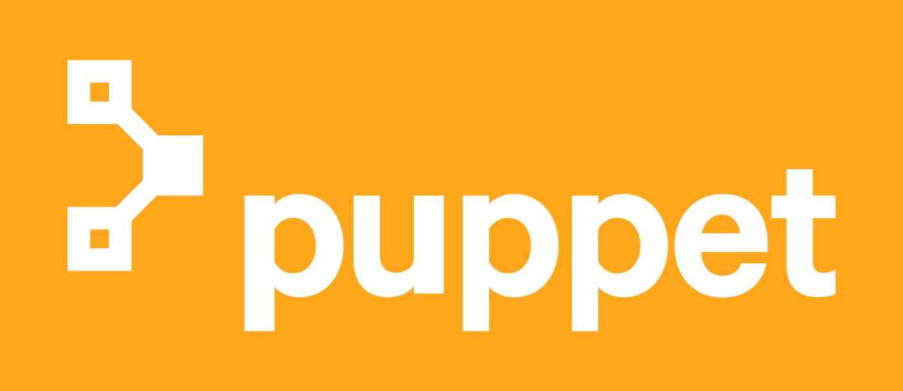

We've always had a challenge at Microsoft: How do we perform faster automation to produce Infrastructure for catastrophic events / High Available area. Unfortunately, there is not one single tool to complete the job at hand. Many factors determine the use of a particular tool your infrastructure. Here are my top 5 tools that can be used a typical Devops environment.
- Terraform!
Terraform is a fantatic tool for builing Infrastructure as a Service (IaaS) services which is completely cloud-agnostic. It's used for building quick simple templates in the cloud primarly for Azure / AWS but can be used in other cloud providors. It's developed and created using Hashicorp written in the new language of GO which was designed and developed by. Also, you can write your own terraform plugin in go for your custom functionalities. Unlike other configuration management tools, terraform does a great job in maintaining the state of your infrastructure using a concept called state files.
- Vagrant!
 Vagrant is a great tool for configuring virtual machines for development enviornment! Vagrant runs as a VM solution on multiple virtual sollutions for example: Hyper-V, VMWare, and Virtual Box. It uses specific files such as Vagrant Files which contains the configuration of the virtual machine that you're leveraging! This allows for us to strongly deploy multiple environments that all have the same configuration and doesn't have configuration drift which is a major problem at Microsoft.
Vagrant is a great tool for configuring virtual machines for development enviornment! Vagrant runs as a VM solution on multiple virtual sollutions for example: Hyper-V, VMWare, and Virtual Box. It uses specific files such as Vagrant Files which contains the configuration of the virtual machine that you're leveraging! This allows for us to strongly deploy multiple environments that all have the same configuration and doesn't have configuration drift which is a major problem at Microsoft.
- Puppet!
Puppet is also a ruby based configuration management tool like chef. The configuration code  is written using puppet DSL’s and wrapped in modules. While chef cookbooks are more developer-centric while puppet is developed by keeping system administrators in mind. Puppet runs a puppet agent on all server to be configured and it pulls the compiled module from the puppet server and installs required software packages specified in the module.
- Chef!

Chef is a ruby based configuration management tool. You might have come across the term ” infrastructure as code”, which means configuration management. Chef has the concept of cookbooks where you code your infrastructure in DSL (domain specific language) and with a little bit of programming. Chef provisions virtual machines and configures them according to the rules mentioned in the cookbooks. An agent would be running on all the servers which have to be configured. The agent will pull the cookbooks from the chef master server and runs those configurations on the server to reach its desired state
- Dynamic State Configuration!

And finally we have Dynamic State Configuration (DSC). DSC is a management platform in PowerShell that enables you to manage your IT and development infrastructure with configuration as code. Configurations are declarative PowerShell scripts which define and configure instances of resources. Upon running the configuration, DSC (and the resources being called by the configuration) will simply “make it so”, ensuring that the system exists in the state laid out by the configuration. DSC configurations are also idempotent: the Local Configuration Manager (LCM) will continue to ensure that machines are configured in whatever state the configuration declares. Resources are the "make it so" part of DSC. They contain the code that put and keep the target of a configuration in the specified state. Resources reside in PowerShell modules and can be written to model something as generic as a file or a Windows process, or as specific as an IIS server or a VM running in Azure. The Local Configuration Manager (LCM) is the engine by which DSC facilitates the interaction between resources and configurations. The LCM regularly polls the system using the control flow implemented by resources to ensure that the state defined by a configuration is maintained. If the system is out of state, the LCM makes calls to the code in resources to “make it so” according to the configuration.